Быстрый ужин за 30 минут
Ужины, которые готовятся не дольше получаса. 469 рецептов: у каждого время, калории и БЖУ на порцию, пошаговые инструкции и список покупок
 Кускус10 мин · 233 ккал · Б 6 г · Гарнир
Кускус10 мин · 233 ккал · Б 6 г · Гарнир Салат из свежих овощей10 мин · 130 ккал · Б 2 г · Салат
Салат из свежих овощей10 мин · 130 ккал · Б 2 г · Салат Морковь с чесноком и сыром10 мин · 279 ккал · Б 11 г · Салат
Морковь с чесноком и сыром10 мин · 279 ккал · Б 11 г · Салат Ачичук10 мин · 41 ккал · Б 2 г · Салат
Ачичук10 мин · 41 ккал · Б 2 г · Салат Творог с зеленью10 мин · 237 ккал · Б 27 г · Закуска
Творог с зеленью10 мин · 237 ккал · Б 27 г · Закуска Салат «Капрезе» с моцареллой и помидорами10 мин · 297 ккал · Б 16 г · Салат
Салат «Капрезе» с моцареллой и помидорами10 мин · 297 ккал · Б 16 г · Салат Салат из квашеной капусты с луком и маслом10 мин · 167 ккал · Б 3 г · Салат
Салат из квашеной капусты с луком и маслом10 мин · 167 ккал · Б 3 г · Салат Яичница с беконом12 мин · 473 ккал · Б 28 г · Второе блюдо
Яичница с беконом12 мин · 473 ккал · Б 28 г · Второе блюдо Креветки с чесноком15 мин · 295 ккал · Б 32 г · Второе блюдо
Креветки с чесноком15 мин · 295 ккал · Б 32 г · Второе блюдо Греческий салат15 мин · 353 ккал · Б 12 г · Салат
Греческий салат15 мин · 353 ккал · Б 12 г · Салат Салат с тунцом и фасолью15 мин · 220 ккал · Б 21 г · Салат
Салат с тунцом и фасолью15 мин · 220 ккал · Б 21 г · Салат Омлет с курицей15 мин · 361 ккал · Б 34 г · Завтрак
Омлет с курицей15 мин · 361 ккал · Б 34 г · Завтрак Омлет с остатками овощей15 мин · 361 ккал · Б 18 г · Завтрак
Омлет с остатками овощей15 мин · 361 ккал · Б 18 г · Завтрак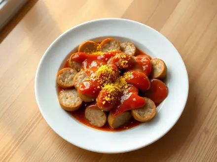
Карривурст15 мин · 565 ккал · Б 19 г · Второе блюдо Фарш по-тайски с базиликом (пад кра пао)15 мин · 528 ккал · Б 28 г · Второе блюдо
Фарш по-тайски с базиликом (пад кра пао)15 мин · 528 ккал · Б 28 г · Второе блюдо Стейк сёмги на сковороде15 мин · 530 ккал · Б 40 г · Второе блюдо
Стейк сёмги на сковороде15 мин · 530 ккал · Б 40 г · Второе блюдо Мидии в сливочно-чесночном соусе15 мин · 424 ккал · Б 26 г · Второе блюдо
Мидии в сливочно-чесночном соусе15 мин · 424 ккал · Б 26 г · Второе блюдо Крабовые палочки в кляре15 мин · 439 ккал · Б 21 г · Второе блюдо
Крабовые палочки в кляре15 мин · 439 ккал · Б 21 г · Второе блюдо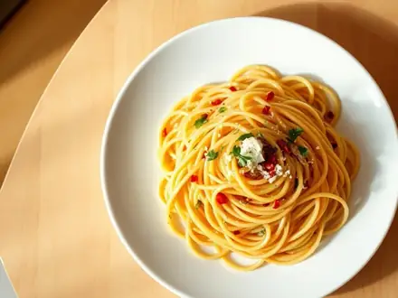
Спагетти аглио-олио с чесноком и перцем15 мин · 581 ккал · Б 11 г · Второе блюдо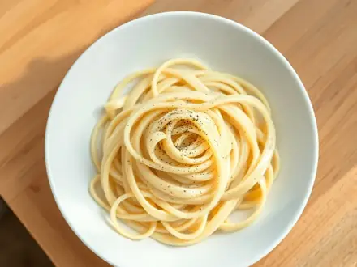
Феттучине Альфредо15 мин · 759 ккал · Б 23 г · Второе блюдо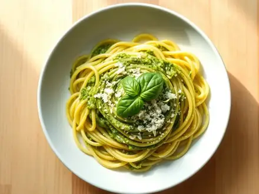
Паста с соусом песто15 мин · 776 ккал · Б 20 г · Второе блюдо Лапша с чесноком, соевым соусом и зелёным луком15 мин · 648 ккал · Б 23 г · Второе блюдо
Лапша с чесноком, соевым соусом и зелёным луком15 мин · 648 ккал · Б 23 г · Второе блюдо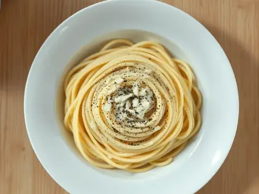
Паста качо э пепе с сыром и перцем15 мин · 498 ккал · Б 25 г · Второе блюдо Китайский суп с яйцом и помидорами15 мин · 183 ккал · Б 9 г · Суп
Китайский суп с яйцом и помидорами15 мин · 183 ккал · Б 9 г · Суп Жареная гречка с яйцом и луком15 мин · 445 ккал · Б 16 г · Второе блюдо
Жареная гречка с яйцом и луком15 мин · 445 ккал · Б 16 г · Второе блюдо Горячие тосты с тунцом и сыром15 мин · 594 ккал · Б 37 г · Второе блюдо
Горячие тосты с тунцом и сыром15 мин · 594 ккал · Б 37 г · Второе блюдо Сосиски в лаваше с сыром на сковороде15 мин · 643 ккал · Б 30 г · Второе блюдо
Сосиски в лаваше с сыром на сковороде15 мин · 643 ккал · Б 30 г · Второе блюдо Омлет с тунцом и помидорами15 мин · 348 ккал · Б 37 г · Второе блюдо
Омлет с тунцом и помидорами15 мин · 348 ккал · Б 37 г · Второе блюдо Тамагояки - японский омлет-рулет15 мин · 270 ккал · Б 18 г · Второе блюдо
Тамагояки - японский омлет-рулет15 мин · 270 ккал · Б 18 г · Второе блюдо Яйца с помидорами по-китайски15 мин · 338 ккал · Б 16 г · Второе блюдо
Яйца с помидорами по-китайски15 мин · 338 ккал · Б 16 г · Второе блюдо Яичница в кольцах болгарского перца15 мин · 349 ккал · Б 21 г · Второе блюдо
Яичница в кольцах болгарского перца15 мин · 349 ккал · Б 21 г · Второе блюдо Омлет с сосисками на сковороде15 мин · 445 ккал · Б 23 г · Второе блюдо
Омлет с сосисками на сковороде15 мин · 445 ккал · Б 23 г · Второе блюдо Омлет со шпинатом и фетой15 мин · 356 ккал · Б 22 г · Второе блюдо
Омлет со шпинатом и фетой15 мин · 356 ккал · Б 22 г · Второе блюдо Жареный сулугуни с помидорами15 мин · 570 ккал · Б 31 г · Второе блюдо
Жареный сулугуни с помидорами15 мин · 570 ккал · Б 31 г · Второе блюдо Омлет с крабовыми палочками15 мин · 360 ккал · Б 24 г · Второе блюдо
Омлет с крабовыми палочками15 мин · 360 ккал · Б 24 г · Второе блюдо Креветки с яйцом по-китайски15 мин · 368 ккал · Б 33 г · Второе блюдо
Креветки с яйцом по-китайски15 мин · 368 ккал · Б 33 г · Второе блюдо Омлет Пуляр - пышный французский омлет15 мин · 278 ккал · Б 14 г · Второе блюдо
Омлет Пуляр - пышный французский омлет15 мин · 278 ккал · Б 14 г · Второе блюдо Анда бхурджи - яичница-болтунья по-индийски15 мин · 342 ккал · Б 19 г · Второе блюдо
Анда бхурджи - яичница-болтунья по-индийски15 мин · 342 ккал · Б 19 г · Второе блюдо Капуста, жаренная по-китайски с чесноком и соевым соусом15 мин · 246 ккал · Б 7 г · Второе блюдо
Капуста, жаренная по-китайски с чесноком и соевым соусом15 мин · 246 ккал · Б 7 г · Второе блюдо Жареные грибы с яйцом и луком15 мин · 370 ккал · Б 23 г · Второе блюдо
Жареные грибы с яйцом и луком15 мин · 370 ккал · Б 23 г · Второе блюдо Лаваш с яйцом и сыром на сковороде15 мин · 620 ккал · Б 33 г · Второе блюдо
Лаваш с яйцом и сыром на сковороде15 мин · 620 ккал · Б 33 г · Второе блюдо Тосты с фасолью в томатном соусе15 мин · 466 ккал · Б 19 г · Второе блюдо
Тосты с фасолью в томатном соусе15 мин · 466 ккал · Б 19 г · Второе блюдо Панини с моцареллой, помидорами и базиликом15 мин · 591 ккал · Б 26 г · Второе блюдо
Панини с моцареллой, помидорами и базиликом15 мин · 591 ккал · Б 26 г · Второе блюдо Таратор15 мин · 228 ккал · Б 9 г · Суп
Таратор15 мин · 228 ккал · Б 9 г · Суп Салат «Красное море» с крабовыми палочками и помидорами15 мин · 275 ккал · Б 11 г · Салат
Салат «Красное море» с крабовыми палочками и помидорами15 мин · 275 ккал · Б 11 г · Салат Салат «Вальдорф» с сельдереем, яблоком и орехами15 мин · 279 ккал · Б 5 г · Салат
Салат «Вальдорф» с сельдереем, яблоком и орехами15 мин · 279 ккал · Б 5 г · Салат Шопский салат с брынзой15 мин · 223 ккал · Б 10 г · Салат
Шопский салат с брынзой15 мин · 223 ккал · Б 10 г · Салат Брокколи с чесноком на сковороде15 мин · 132 ккал · Б 4 г · Гарнир
Брокколи с чесноком на сковороде15 мин · 132 ккал · Б 4 г · Гарнир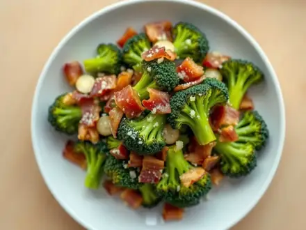
Брокколи с беконом и чесноком на сковороде18 мин · 455 ккал · Б 23 г · Второе блюдо Овощи на пару20 мин · 127 ккал · Б 5 г · Гарнир
Овощи на пару20 мин · 127 ккал · Б 5 г · Гарнир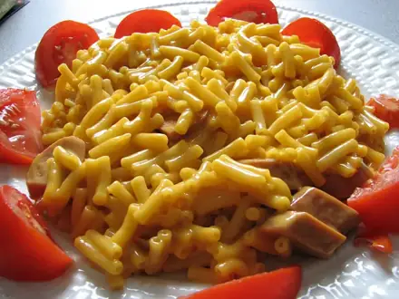
Макароны с сыром20 мин · 453 ккал · Б 18 г · Гарнир Салат с тунцом и яйцом20 мин · 258 ккал · Б 23 г · Салат
Салат с тунцом и яйцом20 мин · 258 ккал · Б 23 г · Салат Жареный рис с яйцом и овощами20 мин · 532 ккал · Б 16 г · Второе блюдо
Жареный рис с яйцом и овощами20 мин · 532 ккал · Б 16 г · Второе блюдо Морковь по-корейски20 мин · 136 ккал · Б 1 г · Салат
Морковь по-корейски20 мин · 136 ккал · Б 1 г · Салат Гаспачо20 мин · 185 ккал · Б 4 г · Суп
Гаспачо20 мин · 185 ккал · Б 4 г · Суп Жареный рис с овощами по-домашнему20 мин · 401 ккал · Б 11 г · Второе блюдо
Жареный рис с овощами по-домашнему20 мин · 401 ккал · Б 11 г · Второе блюдо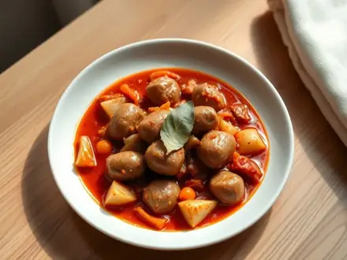
Сосиски в томатном соусе с луком20 мин · 444 ккал · Б 16 г · Второе блюдо Говяжий стейк на сковороде20 мин · 504 ккал · Б 38 г · Второе блюдо
Говяжий стейк на сковороде20 мин · 504 ккал · Б 38 г · Второе блюдо Свинина с имбирём по-японски (сёгаяки)20 мин · 585 ккал · Б 30 г · Второе блюдо
Свинина с имбирём по-японски (сёгаяки)20 мин · 585 ккал · Б 30 г · Второе блюдо Лосось терияки20 мин · 512 ккал · Б 42 г · Второе блюдо
Лосось терияки20 мин · 512 ккал · Б 42 г · Второе блюдо Креветки в кокосовом молоке с карри20 мин · 481 ккал · Б 30 г · Второе блюдо
Креветки в кокосовом молоке с карри20 мин · 481 ккал · Б 30 г · Второе блюдо Кальмары жареные с луком20 мин · 378 ккал · Б 46 г · Второе блюдо
Кальмары жареные с луком20 мин · 378 ккал · Б 46 г · Второе блюдо Хек жареный на сковороде20 мин · 292 ккал · Б 31 г · Второе блюдо
Хек жареный на сковороде20 мин · 292 ккал · Б 31 г · Второе блюдо Горбуша жареная на сковороде20 мин · 380 ккал · Б 42 г · Второе блюдо
Горбуша жареная на сковороде20 мин · 380 ккал · Б 42 г · Второе блюдо Филе скумбрии в соевом соусе на сковороде20 мин · 283 ккал · Б 19 г · Второе блюдо
Филе скумбрии в соевом соусе на сковороде20 мин · 283 ккал · Б 19 г · Второе блюдо Мидии в томатном соусе с чесноком20 мин · 297 ккал · Б 25 г · Второе блюдо
Мидии в томатном соусе с чесноком20 мин · 297 ккал · Б 25 г · Второе блюдо Паста с креветками в сливочно-чесночном соусе20 мин · 751 ккал · Б 42 г · Второе блюдо
Паста с креветками в сливочно-чесночном соусе20 мин · 751 ккал · Б 42 г · Второе блюдо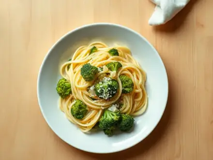
Паста с брокколи и чесноком20 мин · 609 ккал · Б 22 г · Второе блюдо Паста с сёмгой в сливочном соусе20 мин · 655 ккал · Б 28 г · Второе блюдо
Паста с сёмгой в сливочном соусе20 мин · 655 ккал · Б 28 г · Второе блюдо Паста с кабачками и чесноком20 мин · 575 ккал · Б 17 г · Второе блюдо
Паста с кабачками и чесноком20 мин · 575 ккал · Б 17 г · Второе блюдо Паста с беконом и горошком в сливках20 мин · 765 ккал · Б 30 г · Второе блюдо
Паста с беконом и горошком в сливках20 мин · 765 ккал · Б 30 г · Второе блюдо Макароны с яйцом на сковороде20 мин · 521 ккал · Б 21 г · Второе блюдо
Макароны с яйцом на сковороде20 мин · 521 ккал · Б 21 г · Второе блюдо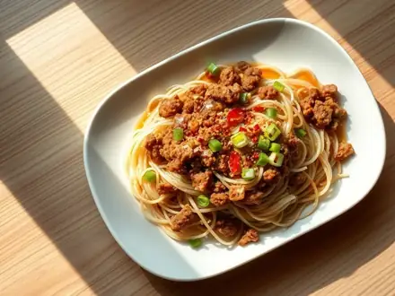
Лапша с фаршем по-китайски20 мин · 658 ккал · Б 23 г · Второе блюдо Паста с помидорами и моцареллой20 мин · 690 ккал · Б 27 г · Второе блюдо
Паста с помидорами и моцареллой20 мин · 690 ккал · Б 27 г · Второе блюдо Кускус с овощами и фетой20 мин · 555 ккал · Б 18 г · Второе блюдо
Кускус с овощами и фетой20 мин · 555 ккал · Б 18 г · Второе блюдо Кускус с креветками и чесноком20 мин · 542 ккал · Б 36 г · Второе блюдо
Кускус с креветками и чесноком20 мин · 542 ккал · Б 36 г · Второе блюдо Чылбыр (яйца пашот на йогурте)20 мин · 562 ккал · Б 34 г · Второе блюдо
Чылбыр (яйца пашот на йогурте)20 мин · 562 ккал · Б 34 г · Второе блюдо Цветная капуста, жаренная с яйцом20 мин · 341 ккал · Б 18 г · Второе блюдо
Цветная капуста, жаренная с яйцом20 мин · 341 ккал · Б 18 г · Второе блюдо Стручковая фасоль с яйцом20 мин · 330 ккал · Б 19 г · Второе блюдо
Стручковая фасоль с яйцом20 мин · 330 ккал · Б 19 г · Второе блюдо Страчателла: итальянский суп с яйцом и шпинатом20 мин · 266 ккал · Б 33 г · Суп
Страчателла: итальянский суп с яйцом и шпинатом20 мин · 266 ккал · Б 33 г · Суп- Суп-пюре из зелёного горошка20 мин · 228 ккал · Б 8 г · Суп
 Салат «Тбилиси» с фасолью и говядиной20 мин · 465 ккал · Б 29 г · Салат
Салат «Тбилиси» с фасолью и говядиной20 мин · 465 ккал · Б 29 г · Салат Тёплый салат с креветками и авокадо20 мин · 460 ккал · Б 33 г · Салат
Тёплый салат с креветками и авокадо20 мин · 460 ккал · Б 33 г · Салат Салат с фасолью, ветчиной и сухариками20 мин · 513 ккал · Б 21 г · Салат
Салат с фасолью, ветчиной и сухариками20 мин · 513 ккал · Б 21 г · Салат Панцанелла с помидорами20 мин · 370 ккал · Б 8 г · Салат
Панцанелла с помидорами20 мин · 370 ккал · Б 8 г · Салат Фриттата с макаронами20 мин · 565 ккал · Б 31 г · Второе блюдо
Фриттата с макаронами20 мин · 565 ккал · Б 31 г · Второе блюдо Картофельные оладьи из вчерашнего пюре с сыром20 мин · 530 ккал · Б 17 г · Второе блюдо
Картофельные оладьи из вчерашнего пюре с сыром20 мин · 530 ккал · Б 17 г · Второе блюдо Курица из супа в сметанном соусе с чесноком20 мин · 554 ккал · Б 48 г · Второе блюдо
Курица из супа в сметанном соусе с чесноком20 мин · 554 ккал · Б 48 г · Второе блюдо Жареные макароны с овощами по-китайски20 мин · 525 ккал · Б 21 г · Второе блюдо
Жареные макароны с овощами по-китайски20 мин · 525 ккал · Б 21 г · Второе блюдо Миги - жареный хлеб с колбасками по-испански20 мин · 781 ккал · Б 28 г · Второе блюдо
Миги - жареный хлеб с колбасками по-испански20 мин · 781 ккал · Б 28 г · Второе блюдо Браткартофель - жареная отварная картошка с беконом20 мин · 596 ккал · Б 17 г · Второе блюдо
Браткартофель - жареная отварная картошка с беконом20 мин · 596 ккал · Б 17 г · Второе блюдо Кесадилья с курицей и сыром20 мин · 775 ккал · Б 54 г · Второе блюдо
Кесадилья с курицей и сыром20 мин · 775 ккал · Б 54 г · Второе блюдо Конвертики из лаваша с ветчиной и сыром на сковороде20 мин · 768 ккал · Б 37 г · Второе блюдо
Конвертики из лаваша с ветчиной и сыром на сковороде20 мин · 768 ккал · Б 37 г · Второе блюдо Горячие бутерброды с фаршем на сковороде20 мин · 773 ккал · Б 31 г · Второе блюдо
Горячие бутерброды с фаршем на сковороде20 мин · 773 ккал · Б 31 г · Второе блюдо Гёзлеме из лаваша со шпинатом и брынзой20 мин · 627 ккал · Б 28 г · Второе блюдо
Гёзлеме из лаваша со шпинатом и брынзой20 мин · 627 ккал · Б 28 г · Второе блюдо Куриная печень в соевом соусе с имбирём20 мин · 328 ккал · Б 33 г · Второе блюдо
Куриная печень в соевом соусе с имбирём20 мин · 328 ккал · Б 33 г · Второе блюдо Свинина в медово-горчичном соусе на сковороде20 мин · 691 ккал · Б 35 г · Второе блюдо
Свинина в медово-горчичном соусе на сковороде20 мин · 691 ккал · Б 35 г · Второе блюдо Говядина терияки с кунжутом20 мин · 514 ккал · Б 36 г · Второе блюдо
Говядина терияки с кунжутом20 мин · 514 ккал · Б 36 г · Второе блюдо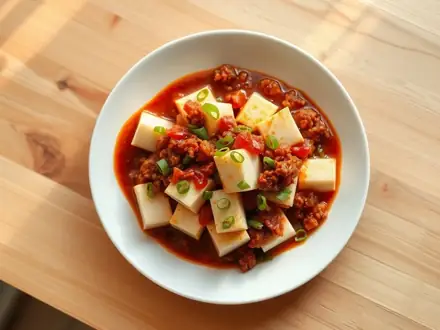
Мапо тофу с фаршем20 мин · 364 ккал · Б 23 г · Второе блюдо Сосиски в кляре на сковороде20 мин · 552 ккал · Б 18 г · Второе блюдо
Сосиски в кляре на сковороде20 мин · 552 ккал · Б 18 г · Второе блюдо Тунец с фасолью в томатном соусе20 мин · 446 ккал · Б 38 г · Второе блюдо
Тунец с фасолью в томатном соусе20 мин · 446 ккал · Б 38 г · Второе блюдо Оладьи из рыбных консервов20 мин · 598 ккал · Б 39 г · Второе блюдо
Оладьи из рыбных консервов20 мин · 598 ккал · Б 39 г · Второе блюдо Креветки с овощами в соевом соусе20 мин · 397 ккал · Б 44 г · Второе блюдо
Креветки с овощами в соевом соусе20 мин · 397 ккал · Б 44 г · Второе блюдо Мидии, запечённые с сыром и чесноком20 мин · 532 ккал · Б 46 г · Второе блюдо
Мидии, запечённые с сыром и чесноком20 мин · 532 ккал · Б 46 г · Второе блюдо Морской коктейль, жаренный с луком и соевым соусом20 мин · 427 ккал · Б 44 г · Второе блюдо
Морской коктейль, жаренный с луком и соевым соусом20 мин · 427 ккал · Б 44 г · Второе блюдо Треска в горчично-сливочном соусе20 мин · 405 ккал · Б 38 г · Второе блюдо
Треска в горчично-сливочном соусе20 мин · 405 ккал · Б 38 г · Второе блюдо Кабачки с креветками и чесноком на сковороде20 мин · 369 ккал · Б 35 г · Второе блюдо
Кабачки с креветками и чесноком на сковороде20 мин · 369 ккал · Б 35 г · Второе блюдо Омлет с грибами и сыром20 мин · 394 ккал · Б 26 г · Второе блюдо
Омлет с грибами и сыром20 мин · 394 ккал · Б 26 г · Второе блюдо Чижи-пижи - яйца с луком по-грузински20 мин · 348 ккал · Б 19 г · Второе блюдо
Чижи-пижи - яйца с луком по-грузински20 мин · 348 ккал · Б 19 г · Второе блюдо Жареный сыр в панировке по-чешски20 мин · 724 ккал · Б 34 г · Второе блюдо
Жареный сыр в панировке по-чешски20 мин · 724 ккал · Б 34 г · Второе блюдо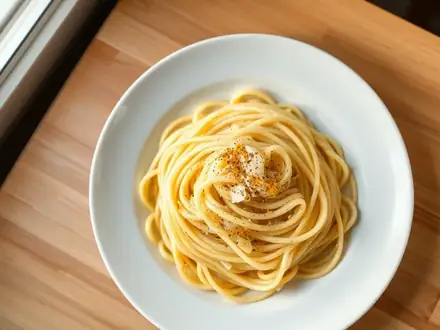
Паста с лимоном и пармезаном20 мин · 617 ккал · Б 20 г · Второе блюдо Паста с сардинами и помидорами20 мин · 705 ккал · Б 41 г · Второе блюдо
Паста с сардинами и помидорами20 мин · 705 ккал · Б 41 г · Второе блюдо- Печёная картошка в микроволновке с сыром и ветчиной20 мин · 476 ккал · Б 18 г · Второе блюдо
 Нут со шпинатом по-испански с чесноком и паприкой20 мин · 378 ккал · Б 15 г · Второе блюдо
Нут со шпинатом по-испански с чесноком и паприкой20 мин · 378 ккал · Б 15 г · Второе блюдо Брокколи с шампиньонами в соевом соусе20 мин · 297 ккал · Б 14 г · Второе блюдо
Брокколи с шампиньонами в соевом соусе20 мин · 297 ккал · Б 14 г · Второе блюдо Кабачки с помидорами и чесноком на сковороде20 мин · 329 ккал · Б 4 г · Второе блюдо
Кабачки с помидорами и чесноком на сковороде20 мин · 329 ккал · Б 4 г · Второе блюдо Шампиньоны в сметане с луком20 мин · 439 ккал · Б 14 г · Второе блюдо
Шампиньоны в сметане с луком20 мин · 439 ккал · Б 14 г · Второе блюдо Нут с кабачком и перцем на сковороде20 мин · 412 ккал · Б 13 г · Второе блюдо
Нут с кабачком и перцем на сковороде20 мин · 412 ккал · Б 13 г · Второе блюдо Шпинат с яйцами по-турецки на сковороде20 мин · 345 ккал · Б 17 г · Второе блюдо
Шпинат с яйцами по-турецки на сковороде20 мин · 345 ккал · Б 17 г · Второе блюдо Быстрый рамен с курицей и яйцом в мешочек20 мин · 551 ккал · Б 45 г · Суп
Быстрый рамен с курицей и яйцом в мешочек20 мин · 551 ккал · Б 45 г · Суп Салат «Обжорка» с говядиной и солёными огурцами20 мин · 556 ккал · Б 29 г · Салат
Салат «Обжорка» с говядиной и солёными огурцами20 мин · 556 ккал · Б 29 г · Салат Клаб-сэндвич с курицей и беконом20 мин · 667 ккал · Б 41 г · Второе блюдо
Клаб-сэндвич с курицей и беконом20 мин · 667 ккал · Б 41 г · Второе блюдо Треска на пару с имбирём и соевым соусом по-кантонски20 мин · 358 ккал · Б 46 г · Второе блюдо
Треска на пару с имбирём и соевым соусом по-кантонски20 мин · 358 ккал · Б 46 г · Второе блюдо Салат «Витаминный» из капусты с морковью и яблоком20 мин · 141 ккал · Б 3 г · Салат
Салат «Витаминный» из капусты с морковью и яблоком20 мин · 141 ккал · Б 3 г · Салат Салат из редиса с огурцом и яйцом со сметаной20 мин · 155 ккал · Б 7 г · Салат
Салат из редиса с огурцом и яйцом со сметаной20 мин · 155 ккал · Б 7 г · Салат Фаттуш - ливанский салат с хрустящей лепёшкой20 мин · 206 ккал · Б 5 г · Салат
Фаттуш - ливанский салат с хрустящей лепёшкой20 мин · 206 ккал · Б 5 г · Салат Битые огурцы по-китайски с чесноком20 мин · 135 ккал · Б 2 г · Салат
Битые огурцы по-китайски с чесноком20 мин · 135 ккал · Б 2 г · Салат Грузинский салат из помидоров и огурцов с грецкими орехами20 мин · 175 ккал · Б 5 г · Салат
Грузинский салат из помидоров и огурцов с грецкими орехами20 мин · 175 ккал · Б 5 г · Салат Стручковая фасоль с чесноком и кунжутом20 мин · 128 ккал · Б 4 г · Гарнир
Стручковая фасоль с чесноком и кунжутом20 мин · 128 ккал · Б 4 г · Гарнир Шпинат со сливками и чесноком20 мин · 153 ккал · Б 6 г · Гарнир
Шпинат со сливками и чесноком20 мин · 153 ккал · Б 6 г · Гарнир Зелёный горошек по-французски с салатом и луком20 мин · 134 ккал · Б 5 г · Гарнир
Зелёный горошек по-французски с салатом и луком20 мин · 134 ккал · Б 5 г · Гарнир Бифштекс рубленый с яйцом22 мин · 601 ккал · Б 33 г · Второе блюдо
Бифштекс рубленый с яйцом22 мин · 601 ккал · Б 33 г · Второе блюдо Гречка рассыпчатая25 мин · 156 ккал · Б 6 г · Гарнир
Гречка рассыпчатая25 мин · 156 ккал · Б 6 г · Гарнир Рис рассыпчатый25 мин · 194 ккал · Б 3 г · Гарнир
Рис рассыпчатый25 мин · 194 ккал · Б 3 г · Гарнир Сочная куриная грудка на сковороде25 мин · 275 ккал · Б 47 г · Второе блюдо
Сочная куриная грудка на сковороде25 мин · 275 ккал · Б 47 г · Второе блюдо Рыба на пару с лимоном25 мин · 170 ккал · Б 36 г · Второе блюдо
Рыба на пару с лимоном25 мин · 170 ккал · Б 36 г · Второе блюдо Горбуша в духовке в фольге25 мин · 335 ккал · Б 41 г · Второе блюдо
Горбуша в духовке в фольге25 мин · 335 ккал · Б 41 г · Второе блюдо Кабачки жареные с чесноком25 мин · 264 ккал · Б 3 г · Закуска
Кабачки жареные с чесноком25 мин · 264 ккал · Б 3 г · Закуска Паста с томатным соусом25 мин · 479 ккал · Б 13 г · Второе блюдо
Паста с томатным соусом25 мин · 479 ккал · Б 13 г · Второе блюдо Спагетти карбонара25 мин · 962 ккал · Б 49 г · Второе блюдо
Спагетти карбонара25 мин · 962 ккал · Б 49 г · Второе блюдо Паста с тунцом25 мин · 518 ккал · Б 26 г · Второе блюдо
Паста с тунцом25 мин · 518 ккал · Б 26 г · Второе блюдо Пюре из кабачка и цветной капусты25 мин · 46 ккал · Б 2 г · Гарнир
Пюре из кабачка и цветной капусты25 мин · 46 ккал · Б 2 г · Гарнир Мини-пиццы на лаваше25 мин · 375 ккал · Б 20 г · Закуска
Мини-пиццы на лаваше25 мин · 375 ккал · Б 20 г · Закуска Салат из курицы из супа25 мин · 369 ккал · Б 31 г · Салат
Салат из курицы из супа25 мин · 369 ккал · Б 31 г · Салат Куриное филе в сливочном соусе с чесноком25 мин · 453 ккал · Б 49 г · Второе блюдо
Куриное филе в сливочном соусе с чесноком25 мин · 453 ккал · Б 49 г · Второе блюдо Куриные отбивные в кляре25 мин · 428 ккал · Б 54 г · Второе блюдо
Куриные отбивные в кляре25 мин · 428 ккал · Б 54 г · Второе блюдо Куриные бёдра на сковороде с чесноком и паприкой25 мин · 476 ккал · Б 43 г · Второе блюдо
Куриные бёдра на сковороде с чесноком и паприкой25 мин · 476 ккал · Б 43 г · Второе блюдо Куриная печень с яблоками и луком25 мин · 438 ккал · Б 34 г · Второе блюдо
Куриная печень с яблоками и луком25 мин · 438 ккал · Б 34 г · Второе блюдо Курица гунбао с арахисом25 мин · 445 ккал · Б 46 г · Второе блюдо
Курица гунбао с арахисом25 мин · 445 ккал · Б 46 г · Второе блюдо Курица сатай в арахисовом соусе25 мин · 483 ккал · Б 46 г · Второе блюдо
Курица сатай в арахисовом соусе25 мин · 483 ккал · Б 46 г · Второе блюдо Куриная пикката в лимонном соусе25 мин · 439 ккал · Б 49 г · Второе блюдо
Куриная пикката в лимонном соусе25 мин · 439 ккал · Б 49 г · Второе блюдо Куриный люля-кебаб на сковороде25 мин · 359 ккал · Б 36 г · Второе блюдо
Куриный люля-кебаб на сковороде25 мин · 359 ккал · Б 36 г · Второе блюдо Курица по-мексикански с фасолью и кукурузой25 мин · 320 ккал · Б 37 г · Второе блюдо
Курица по-мексикански с фасолью и кукурузой25 мин · 320 ккал · Б 37 г · Второе блюдо Говяжья печень жареная с луком25 мин · 375 ккал · Б 32 г · Второе блюдо
Говяжья печень жареная с луком25 мин · 375 ккал · Б 32 г · Второе блюдо Люля-кебаб на сковороде25 мин · 502 ккал · Б 30 г · Второе блюдо
Люля-кебаб на сковороде25 мин · 502 ккал · Б 30 г · Второе блюдо Баранина с луком и зирой на сковороде25 мин · 487 ккал · Б 27 г · Второе блюдо
Баранина с луком и зирой на сковороде25 мин · 487 ккал · Б 27 г · Второе блюдо Индейка в сливочно-горчичном соусе25 мин · 407 ккал · Б 42 г · Второе блюдо
Индейка в сливочно-горчичном соусе25 мин · 407 ккал · Б 42 г · Второе блюдо Шницель из индейки25 мин · 447 ккал · Б 40 г · Второе блюдо
Шницель из индейки25 мин · 447 ккал · Б 40 г · Второе блюдо Свинина с яблоками на сковороде25 мин · 572 ккал · Б 25 г · Второе блюдо
Свинина с яблоками на сковороде25 мин · 572 ккал · Б 25 г · Второе блюдо Чевапчичи на сковороде25 мин · 502 ккал · Б 29 г · Второе блюдо
Чевапчичи на сковороде25 мин · 502 ккал · Б 29 г · Второе блюдо Треска в сметане на сковороде25 мин · 328 ккал · Б 32 г · Второе блюдо
Треска в сметане на сковороде25 мин · 328 ккал · Б 32 г · Второе блюдо Креветки в кляре25 мин · 513 ккал · Б 37 г · Второе блюдо
Креветки в кляре25 мин · 513 ккал · Б 37 г · Второе блюдо Креветки саганаки с фетой25 мин · 319 ккал · Б 33 г · Второе блюдо
Креветки саганаки с фетой25 мин · 319 ккал · Б 33 г · Второе блюдо Кольца кальмаров в кляре25 мин · 488 ккал · Б 36 г · Второе блюдо
Кольца кальмаров в кляре25 мин · 488 ккал · Б 36 г · Второе блюдо Скумбрия жареная на сковороде25 мин · 342 ккал · Б 24 г · Второе блюдо
Скумбрия жареная на сковороде25 мин · 342 ккал · Б 24 г · Второе блюдо Хек в томатном соусе по-итальянски25 мин · 254 ккал · Б 30 г · Второе блюдо
Хек в томатном соусе по-итальянски25 мин · 254 ккал · Б 30 г · Второе блюдо Лосось в сливочном соусе со шпинатом25 мин · 531 ккал · Б 37 г · Второе блюдо
Лосось в сливочном соусе со шпинатом25 мин · 531 ккал · Б 37 г · Второе блюдо Лосось в медово-горчичном соусе в духовке25 мин · 419 ккал · Б 35 г · Второе блюдо
Лосось в медово-горчичном соусе в духовке25 мин · 419 ккал · Б 35 г · Второе блюдо Рыба по-польски25 мин · 340 ккал · Б 33 г · Второе блюдо
Рыба по-польски25 мин · 340 ккал · Б 33 г · Второе блюдо Треска в сырной корочке в духовке25 мин · 283 ккал · Б 37 г · Второе блюдо
Треска в сырной корочке в духовке25 мин · 283 ккал · Б 37 г · Второе блюдо Паста с курицей в сливочном соусе25 мин · 678 ккал · Б 40 г · Второе блюдо
Паста с курицей в сливочном соусе25 мин · 678 ккал · Б 40 г · Второе блюдо Паста аматричана с беконом в томатном соусе25 мин · 741 ккал · Б 30 г · Второе блюдо
Паста аматричана с беконом в томатном соусе25 мин · 741 ккал · Б 30 г · Второе блюдо Паста путтанеска с маслинами25 мин · 579 ккал · Б 13 г · Второе блюдо
Паста путтанеска с маслинами25 мин · 579 ккал · Б 13 г · Второе блюдо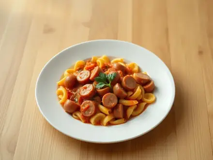
Макароны с сосисками в томатном соусе25 мин · 612 ккал · Б 20 г · Второе блюдо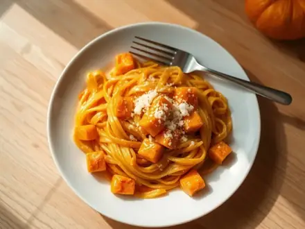
Паста с тыквой в сливочном соусе25 мин · 660 ккал · Б 19 г · Второе блюдо Лапша с курицей в арахисовом соусе25 мин · 696 ккал · Б 49 г · Второе блюдо
Лапша с курицей в арахисовом соусе25 мин · 696 ккал · Б 49 г · Второе блюдо Паста с мидиями в томатном соусе25 мин · 637 ккал · Б 30 г · Второе блюдо
Паста с мидиями в томатном соусе25 мин · 637 ккал · Б 30 г · Второе блюдо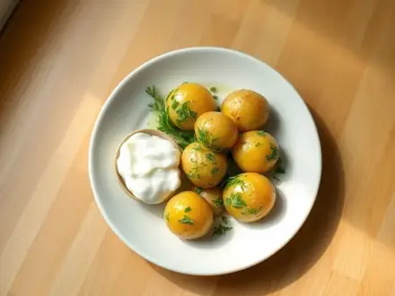
Молодой картофель с укропом и чесноком25 мин · 338 ккал · Б 6 г · Второе блюдо Кускус с курицей и овощами по-мароккански25 мин · 557 ккал · Б 38 г · Второе блюдо
Кускус с курицей и овощами по-мароккански25 мин · 557 ккал · Б 38 г · Второе блюдо Чана масала (нут в томатном соусе)25 мин · 386 ккал · Б 15 г · Второе блюдо
Чана масала (нут в томатном соусе)25 мин · 386 ккал · Б 15 г · Второе блюдо Тайское карри с тофу и овощами25 мин · 463 ккал · Б 14 г · Второе блюдо
Тайское карри с тофу и овощами25 мин · 463 ккал · Б 14 г · Второе блюдо Тофу в кисло-сладком соусе25 мин · 444 ккал · Б 15 г · Второе блюдо
Тофу в кисло-сладком соусе25 мин · 444 ккал · Б 15 г · Второе блюдо Тофу по-корейски в остром соусе (дубу чорим)25 мин · 323 ккал · Б 18 г · Второе блюдо
Тофу по-корейски в остром соусе (дубу чорим)25 мин · 323 ккал · Б 18 г · Второе блюдо Яичное карри (яйца в соусе карри)25 мин · 454 ккал · Б 24 г · Второе блюдо
Яичное карри (яйца в соусе карри)25 мин · 454 ккал · Б 24 г · Второе блюдо Яйца со шпинатом и сыром в духовке25 мин · 576 ккал · Б 30 г · Второе блюдо
Яйца со шпинатом и сыром в духовке25 мин · 576 ккал · Б 30 г · Второе блюдо Баклажаны по-сычуаньски с чесноком25 мин · 392 ккал · Б 6 г · Второе блюдо
Баклажаны по-сычуаньски с чесноком25 мин · 392 ккал · Б 6 г · Второе блюдо Фасоль, тушённая с грибами25 мин · 431 ккал · Б 22 г · Второе блюдо
Фасоль, тушённая с грибами25 мин · 431 ккал · Б 22 г · Второе блюдо Фасоль по-мексикански с кукурузой и перцем25 мин · 480 ккал · Б 23 г · Второе блюдо
Фасоль по-мексикански с кукурузой и перцем25 мин · 480 ккал · Б 23 г · Второе блюдо Тайский суп с кокосовым молоком и курицей25 мин · 346 ккал · Б 29 г · Суп
Тайский суп с кокосовым молоком и курицей25 мин · 346 ккал · Б 29 г · Суп Томатный суп-пюре с базиликом25 мин · 154 ккал · Б 3 г · Суп
Томатный суп-пюре с базиликом25 мин · 154 ккал · Б 3 г · Суп Суп с белой фасолью и шпинатом25 мин · 289 ккал · Б 15 г · Суп
Суп с белой фасолью и шпинатом25 мин · 289 ккал · Б 15 г · Суп- Крем-суп из брокколи с сыром25 мин · 324 ккал · Б 14 г · Суп
 Крем-суп из кабачков25 мин · 199 ккал · Б 4 г · Суп
Крем-суп из кабачков25 мин · 199 ккал · Б 4 г · Суп Тёплый салат с говядиной по-тайски25 мин · 413 ккал · Б 32 г · Салат
Тёплый салат с говядиной по-тайски25 мин · 413 ккал · Б 32 г · Салат Салат с кальмарами, яйцом и огурцом25 мин · 415 ккал · Б 38 г · Салат
Салат с кальмарами, яйцом и огурцом25 мин · 415 ккал · Б 38 г · Салат Тако-салат с фаршем и фасолью25 мин · 542 ккал · Б 32 г · Салат
Тако-салат с фаршем и фасолью25 мин · 542 ккал · Б 32 г · Салат Лионский салат с беконом и яйцом пашот25 мин · 582 ккал · Б 25 г · Салат
Лионский салат с беконом и яйцом пашот25 мин · 582 ккал · Б 25 г · Салат Хэш из картошки и отварной говядины25 мин · 732 ккал · Б 45 г · Второе блюдо
Хэш из картошки и отварной говядины25 мин · 732 ккал · Б 45 г · Второе блюдо Оякодон - рис с курицей и яйцом по-японски25 мин · 713 ккал · Б 44 г · Второе блюдо
Оякодон - рис с курицей и яйцом по-японски25 мин · 713 ккал · Б 44 г · Второе блюдо Ропа вьеха - рваная говядина в томатном соусе25 мин · 625 ккал · Б 49 г · Второе блюдо
Ропа вьеха - рваная говядина в томатном соусе25 мин · 625 ккал · Б 49 г · Второе блюдо Мексиканский рис с фаршем и фасолью на сковороде25 мин · 660 ккал · Б 32 г · Второе блюдо
Мексиканский рис с фаршем и фасолью на сковороде25 мин · 660 ккал · Б 32 г · Второе блюдо Тако с говяжьим фаршем25 мин · 786 ккал · Б 33 г · Второе блюдо
Тако с говяжьим фаршем25 мин · 786 ккал · Б 33 г · Второе блюдо Крок-месье25 мин · 755 ккал · Б 31 г · Второе блюдо
Крок-месье25 мин · 755 ккал · Б 31 г · Второе блюдо Ленивые чебуреки из лаваша с фаршем25 мин · 736 ккал · Б 31 г · Второе блюдо
Ленивые чебуреки из лаваша с фаршем25 мин · 736 ккал · Б 31 г · Второе блюдо Бань ми - вьетнамский сэндвич с курицей25 мин · 681 ккал · Б 41 г · Второе блюдо
Бань ми - вьетнамский сэндвич с курицей25 мин · 681 ккал · Б 41 г · Второе блюдо Курица в апельсиновом соусе по-китайски25 мин · 417 ккал · Б 41 г · Второе блюдо
Курица в апельсиновом соусе по-китайски25 мин · 417 ккал · Б 41 г · Второе блюдо Курица по-тоскански со шпинатом и помидорами25 мин · 451 ккал · Б 47 г · Второе блюдо
Курица по-тоскански со шпинатом и помидорами25 мин · 451 ккал · Б 47 г · Второе блюдо Куриные бёдра в соусе барбекю на сковороде25 мин · 475 ккал · Б 37 г · Второе блюдо
Куриные бёдра в соусе барбекю на сковороде25 мин · 475 ккал · Б 37 г · Второе блюдо Цукунэ: японские котлетки из куриного фарша в соусе25 мин · 368 ккал · Б 32 г · Второе блюдо
Цукунэ: японские котлетки из куриного фарша в соусе25 мин · 368 ккал · Б 32 г · Второе блюдо Медальоны из индейки в беконе на сковороде25 мин · 507 ккал · Б 56 г · Второе блюдо
Медальоны из индейки в беконе на сковороде25 мин · 507 ккал · Б 56 г · Второе блюдо Индейка с курагой и луком на сковороде25 мин · 347 ккал · Б 42 г · Второе блюдо
Индейка с курагой и луком на сковороде25 мин · 347 ккал · Б 42 г · Второе блюдо Куриная печень, тушённая с болгарским перцем и помидорами25 мин · 365 ккал · Б 35 г · Второе блюдо
Куриная печень, тушённая с болгарским перцем и помидорами25 мин · 365 ккал · Б 35 г · Второе блюдо Куриная печень в кляре25 мин · 457 ккал · Б 38 г · Второе блюдо
Куриная печень в кляре25 мин · 457 ккал · Б 38 г · Второе блюдо Шницель из свинины в панировке25 мин · 705 ккал · Б 32 г · Второе блюдо
Шницель из свинины в панировке25 мин · 705 ккал · Б 32 г · Второе блюдо Свинина с болгарским перцем в соевом соусе25 мин · 667 ккал · Б 32 г · Второе блюдо
Свинина с болгарским перцем в соевом соусе25 мин · 667 ккал · Б 32 г · Второе блюдо Говядина по-монгольски с зелёным луком25 мин · 640 ккал · Б 36 г · Второе блюдо
Говядина по-монгольски с зелёным луком25 мин · 640 ккал · Б 36 г · Второе блюдо Свиные отбивные в горчично-сливочном соусе25 мин · 702 ккал · Б 31 г · Второе блюдо
Свиные отбивные в горчично-сливочном соусе25 мин · 702 ккал · Б 31 г · Второе блюдо Говяжья печень в сметане с луком25 мин · 465 ккал · Б 30 г · Второе блюдо
Говяжья печень в сметане с луком25 мин · 465 ккал · Б 30 г · Второе блюдо Отбивные из говяжьей печени в кляре25 мин · 456 ккал · Б 34 г · Второе блюдо
Отбивные из говяжьей печени в кляре25 мин · 456 ккал · Б 34 г · Второе блюдо Печень по-берлински с яблоками и луком25 мин · 538 ккал · Б 34 г · Второе блюдо
Печень по-берлински с яблоками и луком25 мин · 538 ккал · Б 34 г · Второе блюдо Каре ягнёнка на сковороде с чесноком25 мин · 682 ккал · Б 40 г · Второе блюдо
Каре ягнёнка на сковороде с чесноком25 мин · 682 ккал · Б 40 г · Второе блюдо Острая свинина по-корейски (чеюк покым)25 мин · 720 ккал · Б 35 г · Второе блюдо
Острая свинина по-корейски (чеюк покым)25 мин · 720 ккал · Б 35 г · Второе блюдо Свинина юйсян с морковью по-китайски25 мин · 641 ккал · Б 27 г · Второе блюдо
Свинина юйсян с морковью по-китайски25 мин · 641 ккал · Б 27 г · Второе блюдо Говядина со стручковой фасолью по-китайски25 мин · 500 ккал · Б 33 г · Второе блюдо
Говядина со стручковой фасолью по-китайски25 мин · 500 ккал · Б 33 г · Второе блюдо Ромштекс из говядины25 мин · 672 ккал · Б 40 г · Второе блюдо
Ромштекс из говядины25 мин · 672 ккал · Б 40 г · Второе блюдо Стейк из свиной шеи на сковороде25 мин · 629 ккал · Б 32 г · Второе блюдо
Стейк из свиной шеи на сковороде25 мин · 629 ккал · Б 32 г · Второе блюдо Свинина алла пиццайола в томатном соусе25 мин · 641 ккал · Б 31 г · Второе блюдо
Свинина алла пиццайола в томатном соусе25 мин · 641 ккал · Б 31 г · Второе блюдо Мясные оладьи из фарша25 мин · 506 ккал · Б 23 г · Второе блюдо
Мясные оладьи из фарша25 мин · 506 ккал · Б 23 г · Второе блюдо Шницель рубленый из фарша в сухарях25 мин · 541 ккал · Б 27 г · Второе блюдо
Шницель рубленый из фарша в сухарях25 мин · 541 ккал · Б 27 г · Второе блюдо Яйца с фаршем по-турецки (кыймалы юмурта)25 мин · 635 ккал · Б 38 г · Второе блюдо
Яйца с фаршем по-турецки (кыймалы юмурта)25 мин · 635 ккал · Б 38 г · Второе блюдо Сосиски, запечённые с помидорами и сыром25 мин · 464 ккал · Б 22 г · Второе блюдо
Сосиски, запечённые с помидорами и сыром25 мин · 464 ккал · Б 22 г · Второе блюдо Шампиньоны с беконом в сливках25 мин · 447 ккал · Б 21 г · Второе блюдо
Шампиньоны с беконом в сливках25 мин · 447 ккал · Б 21 г · Второе блюдо Сосиски в беконе с сыром в духовке25 мин · 604 ккал · Б 28 г · Второе блюдо
Сосиски в беконе с сыром в духовке25 мин · 604 ккал · Б 28 г · Второе блюдо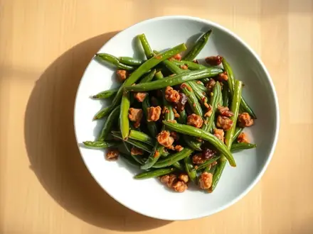
Стручковая фасоль с фаршем по-китайски25 мин · 401 ккал · Б 18 г · Второе блюдо Треска с помидорами и маслинами на сковороде25 мин · 445 ккал · Б 48 г · Второе блюдо
Треска с помидорами и маслинами на сковороде25 мин · 445 ккал · Б 48 г · Второе блюдо Горбуша в сливочном соусе на сковороде25 мин · 516 ккал · Б 44 г · Второе блюдо
Горбуша в сливочном соусе на сковороде25 мин · 516 ккал · Б 44 г · Второе блюдо Жареные кальмары с овощами по-корейски25 мин · 312 ккал · Б 33 г · Второе блюдо
Жареные кальмары с овощами по-корейски25 мин · 312 ккал · Б 33 г · Второе блюдо Кальмары в томатном соусе с чесноком25 мин · 345 ккал · Б 38 г · Второе блюдо
Кальмары в томатном соусе с чесноком25 мин · 345 ккал · Б 38 г · Второе блюдо Котлеты из крабовых палочек с сыром25 мин · 588 ккал · Б 28 г · Второе блюдо
Котлеты из крабовых палочек с сыром25 мин · 588 ккал · Б 28 г · Второе блюдо Минтай, тушённый в молоке с луком25 мин · 321 ккал · Б 41 г · Второе блюдо
Минтай, тушённый в молоке с луком25 мин · 321 ккал · Б 41 г · Второе блюдо Горбуша в апельсиновом соусе в духовке25 мин · 376 ккал · Б 42 г · Второе блюдо
Горбуша в апельсиновом соусе в духовке25 мин · 376 ккал · Б 42 г · Второе блюдо Омлетный рулет с ветчиной и сыром в духовке25 мин · 406 ккал · Б 26 г · Второе блюдо
Омлетный рулет с ветчиной и сыром в духовке25 мин · 406 ккал · Б 26 г · Второе блюдо Яйца кокот с ветчиной и сливками25 мин · 440 ккал · Б 25 г · Второе блюдо
Яйца кокот с ветчиной и сливками25 мин · 440 ккал · Б 25 г · Второе блюдо Фриттата с беконом и помидорами25 мин · 424 ккал · Б 27 г · Второе блюдо
Фриттата с беконом и помидорами25 мин · 424 ккал · Б 27 г · Второе блюдо Несладкие сырники с зеленью и сыром25 мин · 416 ккал · Б 33 г · Второе блюдо
Несладкие сырники с зеленью и сыром25 мин · 416 ккал · Б 33 г · Второе блюдо Бугиурди - фета, запечённая с помидорами и перцем25 мин · 387 ккал · Б 20 г · Второе блюдо
Бугиурди - фета, запечённая с помидорами и перцем25 мин · 387 ккал · Б 20 г · Второе блюдо Яйца, запечённые в авокадо25 мин · 515 ккал · Б 23 г · Второе блюдо
Яйца, запечённые в авокадо25 мин · 515 ккал · Б 23 г · Второе блюдо Паста арраббьята в остром томатном соусе25 мин · 532 ккал · Б 13 г · Второе блюдо
Паста арраббьята в остром томатном соусе25 мин · 532 ккал · Б 13 г · Второе блюдо Паста с кальмарами в томатном соусе25 мин · 670 ккал · Б 40 г · Второе блюдо
Паста с кальмарами в томатном соусе25 мин · 670 ккал · Б 40 г · Второе блюдо Макароны с ветчиной и сыром на сковороде25 мин · 724 ккал · Б 29 г · Второе блюдо
Макароны с ветчиной и сыром на сковороде25 мин · 724 ккал · Б 29 г · Второе блюдо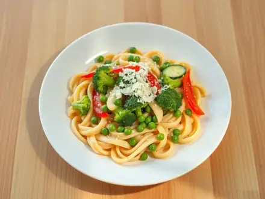
Паста примавера с овощами25 мин · 569 ккал · Б 19 г · Второе блюдо Гречка с кабачком и помидорами на сковороде25 мин · 457 ккал · Б 13 г · Второе блюдо
Гречка с кабачком и помидорами на сковороде25 мин · 457 ккал · Б 13 г · Второе блюдо Киноа с курицей и брокколи25 мин · 644 ккал · Б 50 г · Второе блюдо
Киноа с курицей и брокколи25 мин · 644 ккал · Б 50 г · Второе блюдо Шампиньоны, тушённые в томатном соусе с луком25 мин · 261 ккал · Б 13 г · Второе блюдо
Шампиньоны, тушённые в томатном соусе с луком25 мин · 261 ккал · Б 13 г · Второе блюдо Котлеты из консервированного нута25 мин · 455 ккал · Б 15 г · Второе блюдо
Котлеты из консервированного нута25 мин · 455 ккал · Б 15 г · Второе блюдо Грибной гуляш с паприкой постный25 мин · 307 ккал · Б 15 г · Второе блюдо
Грибной гуляш с паприкой постный25 мин · 307 ккал · Б 15 г · Второе блюдо Постные котлеты из фасоли25 мин · 595 ккал · Б 23 г · Второе блюдо
Постные котлеты из фасоли25 мин · 595 ккал · Б 23 г · Второе блюдо Тофу в арахисовом соусе со стручковой фасолью25 мин · 435 ккал · Б 21 г · Второе блюдо
Тофу в арахисовом соусе со стручковой фасолью25 мин · 435 ккал · Б 21 г · Второе блюдо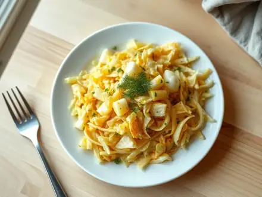
Жареная капуста с яйцом25 мин · 402 ккал · Б 17 г · Второе блюдо Котлеты из брокколи с сыром25 мин · 509 ккал · Б 26 г · Второе блюдо
Котлеты из брокколи с сыром25 мин · 509 ккал · Б 26 г · Второе блюдо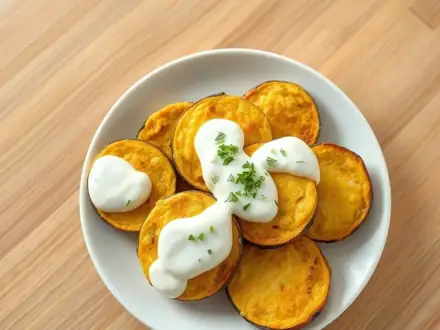
Баклажаны, жаренные в яйце, с чесночной сметаной25 мин · 622 ккал · Б 15 г · Второе блюдо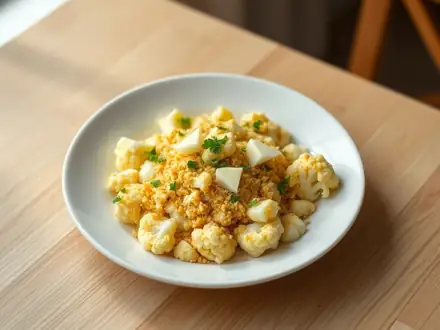
Цветная капуста по-польски с яйцом и сухарями25 мин · 448 ккал · Б 18 г · Второе блюдо Кабачки с грибами, тушённые с луком25 мин · 342 ккал · Б 9 г · Второе блюдо
Кабачки с грибами, тушённые с луком25 мин · 342 ккал · Б 9 г · Второе блюдо Мцване лобио: стручковая фасоль по-грузински с орехами25 мин · 408 ккал · Б 11 г · Второе блюдо
Мцване лобио: стручковая фасоль по-грузински с орехами25 мин · 408 ккал · Б 11 г · Второе блюдо Крем-суп из цветной капусты со сливками25 мин · 220 ккал · Б 7 г · Суп
Крем-суп из цветной капусты со сливками25 мин · 220 ккал · Б 7 г · Суп- Суп с сосисками и вермишелью25 мин · 245 ккал · Б 9 г · Суп
 Салат с курицей и огурцами по-китайски25 мин · 289 ккал · Б 39 г · Салат
Салат с курицей и огурцами по-китайски25 мин · 289 ккал · Б 39 г · Салат Тёплый картофельный салат с селёдкой и луком25 мин · 449 ккал · Б 21 г · Салат
Тёплый картофельный салат с селёдкой и луком25 мин · 449 ккал · Б 21 г · Салат Салат с курицей, черносливом и грецкими орехами25 мин · 605 ккал · Б 36 г · Салат
Салат с курицей, черносливом и грецкими орехами25 мин · 605 ккал · Б 36 г · Салат Тёплый салат с курицей и стручковой фасолью25 мин · 441 ккал · Б 46 г · Салат
Тёплый салат с курицей и стручковой фасолью25 мин · 441 ккал · Б 46 г · Салат Салат «Нисуаз» с тунцом25 мин · 495 ккал · Б 34 г · Салат
Салат «Нисуаз» с тунцом25 мин · 495 ккал · Б 34 г · Салат Тёплый салат из жареных баклажанов с помидорами и чесноком25 мин · 439 ккал · Б 8 г · Салат
Тёплый салат из жареных баклажанов с помидорами и чесноком25 мин · 439 ккал · Б 8 г · Салат Фахитос с курицей и болгарским перцем25 мин · 669 ккал · Б 47 г · Второе блюдо
Фахитос с курицей и болгарским перцем25 мин · 669 ккал · Б 47 г · Второе блюдо Рулетики из лаваша с картофельным пюре и грибами на сковороде25 мин · 457 ккал · Б 12 г · Второе блюдо
Рулетики из лаваша с картофельным пюре и грибами на сковороде25 мин · 457 ккал · Б 12 г · Второе блюдо Хачапури из батона с яйцом в духовке25 мин · 657 ккал · Б 29 г · Второе блюдо
Хачапури из батона с яйцом в духовке25 мин · 657 ккал · Б 29 г · Второе блюдо Курица с чесноком по-испански (польо аль ахильо)25 мин · 537 ккал · Б 37 г · Второе блюдо
Курица с чесноком по-испански (польо аль ахильо)25 мин · 537 ккал · Б 37 г · Второе блюдо Кисло-острый суп по-китайски25 мин · 167 ккал · Б 19 г · Суп
Кисло-острый суп по-китайски25 мин · 167 ккал · Б 19 г · Суп Тёплый салат с куриной печенью и грушей25 мин · 386 ккал · Б 30 г · Салат
Тёплый салат с куриной печенью и грушей25 мин · 386 ккал · Б 30 г · Салат Салат с брокколи, беконом и изюмом25 мин · 369 ккал · Б 11 г · Салат
Салат с брокколи, беконом и изюмом25 мин · 369 ккал · Б 11 г · Салат Яйца, фаршированные сыром и чесноком25 мин · 254 ккал · Б 15 г · Закуска
Яйца, фаршированные сыром и чесноком25 мин · 254 ккал · Б 15 г · Закуска Яйца, фаршированные тунцом25 мин · 240 ккал · Б 22 г · Закуска
Яйца, фаршированные тунцом25 мин · 240 ккал · Б 22 г · Закуска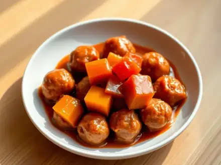
Фрикадельки в кисло-сладком соусе28 мин · 492 ккал · Б 24 г · Второе блюдо Фасоль в томатном соусе с беконом28 мин · 581 ккал · Б 32 г · Второе блюдо
Фасоль в томатном соусе с беконом28 мин · 581 ккал · Б 32 г · Второе блюдо Булгур с овощами30 мин · 272 ккал · Б 8 г · Гарнир
Булгур с овощами30 мин · 272 ккал · Б 8 г · Гарнир Куриная печень со сметаной30 мин · 502 ккал · Б 35 г · Второе блюдо
Куриная печень со сметаной30 мин · 502 ккал · Б 35 г · Второе блюдо Минтай в кляре30 мин · 366 ккал · Б 30 г · Второе блюдо
Минтай в кляре30 мин · 366 ккал · Б 30 г · Второе блюдо Паста с грибами в сливках30 мин · 602 ккал · Б 17 г · Второе блюдо
Паста с грибами в сливках30 мин · 602 ккал · Б 17 г · Второе блюдо Тофу с овощами и соевым соусом30 мин · 330 ккал · Б 16 г · Второе блюдо
Тофу с овощами и соевым соусом30 мин · 330 ккал · Б 16 г · Второе блюдо Вок с курицей и овощами30 мин · 665 ккал · Б 50 г · Второе блюдо
Вок с курицей и овощами30 мин · 665 ккал · Б 50 г · Второе блюдо Курица терияки30 мин · 485 ккал · Б 38 г · Второе блюдо
Курица терияки30 мин · 485 ккал · Б 38 г · Второе блюдо Жареная рисовая лапша с креветками30 мин · 757 ккал · Б 41 г · Второе блюдо
Жареная рисовая лапша с креветками30 мин · 757 ккал · Б 41 г · Второе блюдо Табуле30 мин · 204 ккал · Б 4 г · Салат
Табуле30 мин · 204 ккал · Б 4 г · Салат Ленивые вареники30 мин · 365 ккал · Б 29 г · Завтрак
Ленивые вареники30 мин · 365 ккал · Б 29 г · Завтрак Макароны по-флотски из отварного мяса30 мин · 631 ккал · Б 34 г · Второе блюдо
Макароны по-флотски из отварного мяса30 мин · 631 ккал · Б 34 г · Второе блюдо Курица с грибами в сметане30 мин · 426 ккал · Б 46 г · Второе блюдо
Курица с грибами в сметане30 мин · 426 ккал · Б 46 г · Второе блюдо Куриные голени в томатном соусе на сковороде30 мин · 361 ккал · Б 32 г · Второе блюдо
Куриные голени в томатном соусе на сковороде30 мин · 361 ккал · Б 32 г · Второе блюдо Хрустящие куриные крылья в духовке30 мин · 364 ккал · Б 32 г · Второе блюдо
Хрустящие куриные крылья в духовке30 мин · 364 ккал · Б 32 г · Второе блюдо Рубленые куриные котлеты с сыром30 мин · 465 ккал · Б 50 г · Второе блюдо
Рубленые куриные котлеты с сыром30 мин · 465 ккал · Б 50 г · Второе блюдо Куриные сердечки жареные с луком30 мин · 408 ккал · Б 33 г · Второе блюдо
Куриные сердечки жареные с луком30 мин · 408 ккал · Б 33 г · Второе блюдо Курица в кисло-сладком соусе30 мин · 464 ккал · Б 44 г · Второе блюдо
Курица в кисло-сладком соусе30 мин · 464 ккал · Б 44 г · Второе блюдо Куриные отбивные с помидорами и сыром в духовке30 мин · 442 ккал · Б 59 г · Второе блюдо
Куриные отбивные с помидорами и сыром в духовке30 мин · 442 ккал · Б 59 г · Второе блюдо Курица качаторе30 мин · 552 ккал · Б 45 г · Второе блюдо
Курица качаторе30 мин · 552 ккал · Б 45 г · Второе блюдо Куриный шиш-кебаб в йогурте на сковороде-гриль30 мин · 314 ккал · Б 50 г · Второе блюдо
Куриный шиш-кебаб в йогурте на сковороде-гриль30 мин · 314 ккал · Б 50 г · Второе блюдо Чкмерули - курица в сливочно-чесночном соусе по-грузински30 мин · 631 ккал · Б 44 г · Второе блюдо
Чкмерули - курица в сливочно-чесночном соусе по-грузински30 мин · 631 ккал · Б 44 г · Второе блюдо Куриные биточки с кабачком30 мин · 327 ккал · Б 25 г · Второе блюдо
Куриные биточки с кабачком30 мин · 327 ккал · Б 25 г · Второе блюдо Куриное филе в медово-горчичном соусе в духовке30 мин · 329 ккал · Б 49 г · Второе блюдо
Куриное филе в медово-горчичном соусе в духовке30 мин · 329 ккал · Б 49 г · Второе блюдо Курица, запечённая с брокколи и сыром30 мин · 481 ккал · Б 53 г · Второе блюдо
Курица, запечённая с брокколи и сыром30 мин · 481 ккал · Б 53 г · Второе блюдо Пожарские котлеты из курицы30 мин · 497 ккал · Б 30 г · Второе блюдо
Пожарские котлеты из курицы30 мин · 497 ккал · Б 30 г · Второе блюдо Курица с черносливом в сметане30 мин · 599 ккал · Б 39 г · Второе блюдо
Курица с черносливом в сметане30 мин · 599 ккал · Б 39 г · Второе блюдо Курица с кабачками и помидорами на сковороде30 мин · 316 ккал · Б 42 г · Второе блюдо
Курица с кабачками и помидорами на сковороде30 мин · 316 ккал · Б 42 г · Второе блюдо Свиные отбивные в кляре30 мин · 590 ккал · Б 29 г · Второе блюдо
Свиные отбивные в кляре30 мин · 590 ккал · Б 29 г · Второе блюдо Котлеты из индейки с кабачком30 мин · 337 ккал · Б 27 г · Второе блюдо
Котлеты из индейки с кабачком30 мин · 337 ккал · Б 27 г · Второе блюдо Печёночные оладьи из говяжьей печени30 мин · 374 ккал · Б 28 г · Второе блюдо
Печёночные оладьи из говяжьей печени30 мин · 374 ккал · Б 28 г · Второе блюдо Свинина в кисло-сладком соусе30 мин · 689 ккал · Б 29 г · Второе блюдо
Свинина в кисло-сладком соусе30 мин · 689 ккал · Б 29 г · Второе блюдо Свиные медальоны в сливочно-грибном соусе30 мин · 704 ккал · Б 33 г · Второе блюдо
Свиные медальоны в сливочно-грибном соусе30 мин · 704 ккал · Б 33 г · Второе блюдо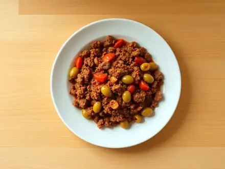
Пикадильо30 мин · 407 ккал · Б 24 г · Второе блюдо Кордон блю из свинины30 мин · 771 ккал · Б 39 г · Второе блюдо
Кордон блю из свинины30 мин · 771 ккал · Б 39 г · Второе блюдо Шведские фрикадельки в сливочном соусе30 мин · 584 ккал · Б 26 г · Второе блюдо
Шведские фрикадельки в сливочном соусе30 мин · 584 ккал · Б 26 г · Второе блюдо Зразы мясные с яйцом30 мин · 546 ккал · Б 29 г · Второе блюдо
Зразы мясные с яйцом30 мин · 546 ккал · Б 29 г · Второе блюдо Пулькоги из говядины30 мин · 465 ккал · Б 34 г · Второе блюдо
Пулькоги из говядины30 мин · 465 ккал · Б 34 г · Второе блюдо Поджарка из свинины с луком30 мин · 572 ккал · Б 28 г · Второе блюдо
Поджарка из свинины с луком30 мин · 572 ккал · Б 28 г · Второе блюдо Сувлаки из свинины на сковороде30 мин · 535 ккал · Б 27 г · Второе блюдо
Сувлаки из свинины на сковороде30 мин · 535 ккал · Б 27 г · Второе блюдо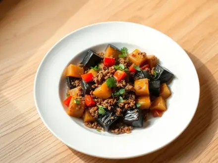
Баклажаны с фаршем на сковороде30 мин · 428 ккал · Б 20 г · Второе блюдо Рыба под маринадом (минтай с морковью и луком)30 мин · 276 ккал · Б 26 г · Второе блюдо
Рыба под маринадом (минтай с морковью и луком)30 мин · 276 ккал · Б 26 г · Второе блюдо Рыбные палочки домашние в духовке30 мин · 295 ккал · Б 34 г · Второе блюдо
Рыбные палочки домашние в духовке30 мин · 295 ккал · Б 34 г · Второе блюдо Рыба, запечённая с омлетом, как в детском саду30 мин · 245 ккал · Б 32 г · Второе блюдо
Рыба, запечённая с омлетом, как в детском саду30 мин · 245 ккал · Б 32 г · Второе блюдо Запеканка с тунцом и брокколи30 мин · 314 ккал · Б 29 г · Второе блюдо
Запеканка с тунцом и брокколи30 мин · 314 ккал · Б 29 г · Второе блюдо Рыба в кисло-сладком соусе по-китайски30 мин · 381 ккал · Б 29 г · Второе блюдо
Рыба в кисло-сладком соусе по-китайски30 мин · 381 ккал · Б 29 г · Второе блюдо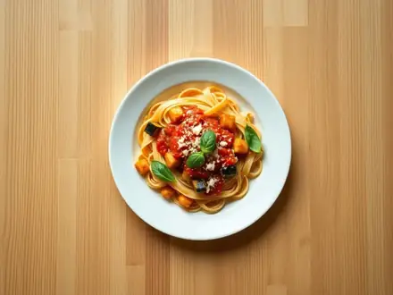
Паста алла норма с баклажанами30 мин · 681 ккал · Б 20 г · Второе блюдо Макароны с курицей и овощами на сковороде30 мин · 557 ккал · Б 35 г · Второе блюдо
Макароны с курицей и овощами на сковороде30 мин · 557 ккал · Б 35 г · Второе блюдо Яичная лапша с говядиной и овощами30 мин · 621 ккал · Б 33 г · Второе блюдо
Яичная лапша с говядиной и овощами30 мин · 621 ккал · Б 33 г · Второе блюдо Рисовая лапша со свининой и овощами30 мин · 605 ккал · Б 20 г · Второе блюдо
Рисовая лапша со свининой и овощами30 мин · 605 ккал · Б 20 г · Второе блюдо Спагетти с фрикадельками в томатном соусе30 мин · 667 ккал · Б 29 г · Второе блюдо
Спагетти с фрикадельками в томатном соусе30 мин · 667 ккал · Б 29 г · Второе блюдо Жареная картошка с грибами30 мин · 395 ккал · Б 10 г · Второе блюдо
Жареная картошка с грибами30 мин · 395 ккал · Б 10 г · Второе блюдо Жареная картошка с курицей на сковороде30 мин · 475 ккал · Б 36 г · Второе блюдо
Жареная картошка с курицей на сковороде30 мин · 475 ккал · Б 36 г · Второе блюдо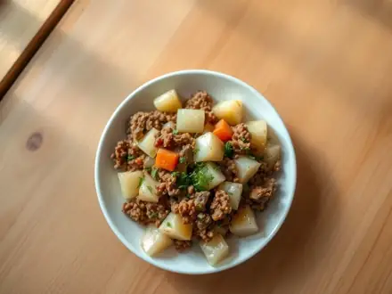
Картошка с фаршем на сковороде30 мин · 487 ккал · Б 21 г · Второе блюдо Крестьянский завтрак с картошкой и беконом30 мин · 593 ккал · Б 23 г · Второе блюдо
Крестьянский завтрак с картошкой и беконом30 мин · 593 ккал · Б 23 г · Второе блюдо Пататас бравас (картошка в остром томатном соусе)30 мин · 390 ккал · Б 7 г · Второе блюдо
Пататас бравас (картошка в остром томатном соусе)30 мин · 390 ккал · Б 7 г · Второе блюдо Испанская тортилья с картофелем30 мин · 374 ккал · Б 13 г · Второе блюдо
Испанская тортилья с картофелем30 мин · 374 ккал · Б 13 г · Второе блюдо Жареная картошка по-грузински с кинзой30 мин · 392 ккал · Б 7 г · Второе блюдо
Жареная картошка по-грузински с кинзой30 мин · 392 ккал · Б 7 г · Второе блюдо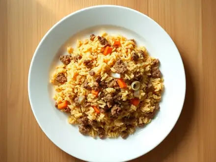
Рис с фаршем на сковороде30 мин · 543 ккал · Б 23 г · Второе блюдо Овощное карри с кокосовым молоком и рисом30 мин · 548 ккал · Б 11 г · Второе блюдо
Овощное карри с кокосовым молоком и рисом30 мин · 548 ккал · Б 11 г · Второе блюдо Рис по-мексикански с фасолью и кукурузой30 мин · 449 ккал · Б 14 г · Второе блюдо
Рис по-мексикански с фасолью и кукурузой30 мин · 449 ккал · Б 14 г · Второе блюдо Курица с рисом в сливочном соусе на сковороде30 мин · 516 ккал · Б 32 г · Второе блюдо
Курица с рисом в сливочном соусе на сковороде30 мин · 516 ккал · Б 32 г · Второе блюдо Гречка с куриной печенью и луком30 мин · 576 ккал · Б 36 г · Второе блюдо
Гречка с куриной печенью и луком30 мин · 576 ккал · Б 36 г · Второе блюдо Гречка с овощами и соевым соусом по-азиатски30 мин · 390 ккал · Б 13 г · Второе блюдо
Гречка с овощами и соевым соусом по-азиатски30 мин · 390 ккал · Б 13 г · Второе блюдо Булгур с курицей и помидорами30 мин · 464 ккал · Б 34 г · Второе блюдо
Булгур с курицей и помидорами30 мин · 464 ккал · Б 34 г · Второе блюдо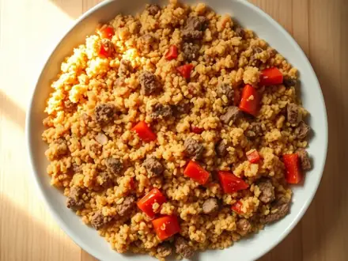
Булгур с фаршем по-турецки30 мин · 530 ккал · Б 23 г · Второе блюдо Пшено с курицей и овощами30 мин · 441 ккал · Б 32 г · Второе блюдо
Пшено с курицей и овощами30 мин · 441 ккал · Б 32 г · Второе блюдо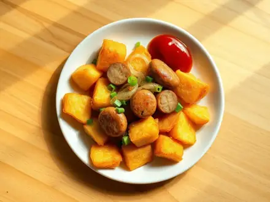
Жареная картошка с сосисками и луком30 мин · 529 ккал · Б 14 г · Второе блюдо Булгур с грибами и луком30 мин · 415 ккал · Б 14 г · Второе блюдо
Булгур с грибами и луком30 мин · 415 ккал · Б 14 г · Второе блюдо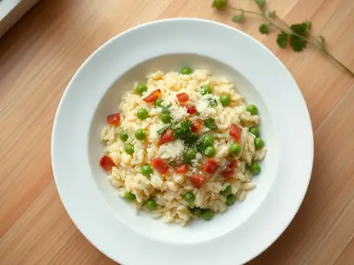
Ризи-бизи (рис с зелёным горошком)30 мин · 571 ккал · Б 20 г · Второе блюдо Дал из красной чечевицы30 мин · 317 ккал · Б 17 г · Второе блюдо
Дал из красной чечевицы30 мин · 317 ккал · Б 17 г · Второе блюдо Кюкю с зеленью (азербайджанский омлет)30 мин · 418 ккал · Б 22 г · Второе блюдо
Кюкю с зеленью (азербайджанский омлет)30 мин · 418 ккал · Б 22 г · Второе блюдо Кабачковые оладьи с сыром и чесноком30 мин · 544 ккал · Б 18 г · Второе блюдо
Кабачковые оладьи с сыром и чесноком30 мин · 544 ккал · Б 18 г · Второе блюдо Кабачки, запечённые с творогом и сыром30 мин · 487 ккал · Б 37 г · Второе блюдо
Кабачки, запечённые с творогом и сыром30 мин · 487 ккал · Б 37 г · Второе блюдо Кабачки, тушённые в сметане30 мин · 446 ккал · Б 7 г · Второе блюдо
Кабачки, тушённые в сметане30 мин · 446 ккал · Б 7 г · Второе блюдо Баклажаны, запечённые с помидорами и сыром30 мин · 414 ккал · Б 19 г · Второе блюдо
Баклажаны, запечённые с помидорами и сыром30 мин · 414 ккал · Б 19 г · Второе блюдо Имам баялды (баклажаны с луком и помидорами)30 мин · 395 ккал · Б 8 г · Второе блюдо
Имам баялды (баклажаны с луком и помидорами)30 мин · 395 ккал · Б 8 г · Второе блюдо Запеканка из брокколи с яйцом и сыром30 мин · 466 ккал · Б 33 г · Второе блюдо
Запеканка из брокколи с яйцом и сыром30 мин · 466 ккал · Б 33 г · Второе блюдо Окономияки (японская капустная лепёшка)30 мин · 497 ккал · Б 16 г · Второе блюдо
Окономияки (японская капустная лепёшка)30 мин · 497 ккал · Б 16 г · Второе блюдо Тушёная тыква с нутом по-мароккански30 мин · 295 ккал · Б 10 г · Второе блюдо
Тушёная тыква с нутом по-мароккански30 мин · 295 ккал · Б 10 г · Второе блюдо Жюльен с грибами30 мин · 559 ккал · Б 28 г · Второе блюдо
Жюльен с грибами30 мин · 559 ккал · Б 28 г · Второе блюдо Морковные котлеты с манкой30 мин · 564 ккал · Б 16 г · Второе блюдо
Морковные котлеты с манкой30 мин · 564 ккал · Б 16 г · Второе блюдо Чушки бюрек (перцы с брынзой в кляре)30 мин · 637 ккал · Б 30 г · Второе блюдо
Чушки бюрек (перцы с брынзой в кляре)30 мин · 637 ккал · Б 30 г · Второе блюдо Морковный суп-пюре с имбирём30 мин · 211 ккал · Б 3 г · Суп
Морковный суп-пюре с имбирём30 мин · 211 ккал · Б 3 г · Суп- Мексиканский суп с курицей и кукурузой30 мин · 240 ккал · Б 25 г · Суп
 Чихиртма из курицы30 мин · 251 ккал · Б 28 г · Суп
Чихиртма из курицы30 мин · 251 ккал · Б 28 г · Суп Рыбный суп с томатами по-средиземноморски30 мин · 205 ккал · Б 24 г · Суп
Рыбный суп с томатами по-средиземноморски30 мин · 205 ккал · Б 24 г · Суп Суп с индейкой и кабачком30 мин · 157 ккал · Б 25 г · Суп
Суп с индейкой и кабачком30 мин · 157 ккал · Б 25 г · Суп Салат с куриной печенью и солёными огурцами30 мин · 494 ккал · Б 32 г · Салат
Салат с куриной печенью и солёными огурцами30 мин · 494 ккал · Б 32 г · Салат Салат Кобб с курицей, беконом и авокадо30 мин · 604 ккал · Б 43 г · Салат
Салат Кобб с курицей, беконом и авокадо30 мин · 604 ккал · Б 43 г · Салат Тёплый салат с чечевицей и фетой30 мин · 430 ккал · Б 25 г · Салат
Тёплый салат с чечевицей и фетой30 мин · 430 ккал · Б 25 г · Салат Салат с курицей, жареными грибами и сыром30 мин · 456 ккал · Б 35 г · Салат
Салат с курицей, жареными грибами и сыром30 мин · 456 ккал · Б 35 г · Салат Запеканка из пюре с курицей и сыром30 мин · 615 ккал · Б 41 г · Второе блюдо
Запеканка из пюре с курицей и сыром30 мин · 615 ккал · Б 41 г · Второе блюдо Котлеты из отварной курицы30 мин · 518 ккал · Б 41 г · Второе блюдо
Котлеты из отварной курицы30 мин · 518 ккал · Б 41 г · Второе блюдо Ленивая ачма из лаваша30 мин · 531 ккал · Б 24 г · Второе блюдо
Ленивая ачма из лаваша30 мин · 531 ккал · Б 24 г · Второе блюдо Энчилада с курицей30 мин · 767 ккал · Б 48 г · Второе блюдо
Энчилада с курицей30 мин · 767 ккал · Б 48 г · Второе блюдо Курица тикка масала30 мин · 399 ккал · Б 45 г · Второе блюдо
Курица тикка масала30 мин · 399 ккал · Б 45 г · Второе блюдо Курица со шпинатом по-индийски (палак чикен)30 мин · 348 ккал · Б 44 г · Второе блюдо
Курица со шпинатом по-индийски (палак чикен)30 мин · 348 ккал · Б 44 г · Второе блюдо Курица караагэ по-японски30 мин · 586 ккал · Б 37 г · Второе блюдо
Курица караагэ по-японски30 мин · 586 ккал · Б 37 г · Второе блюдо Курица адобо по-филиппински30 мин · 454 ккал · Б 38 г · Второе блюдо
Курица адобо по-филиппински30 мин · 454 ккал · Б 38 г · Второе блюдо Куриный паприкаш по-венгерски30 мин · 604 ккал · Б 40 г · Второе блюдо
Куриный паприкаш по-венгерски30 мин · 604 ккал · Б 40 г · Второе блюдо Дак-кальби: острая курица с капустой по-корейски30 мин · 453 ккал · Б 34 г · Второе блюдо
Дак-кальби: острая курица с капустой по-корейски30 мин · 453 ккал · Б 34 г · Второе блюдо Жульен с курицей и грибами30 мин · 410 ккал · Б 37 г · Второе блюдо
Жульен с курицей и грибами30 мин · 410 ккал · Б 37 г · Второе блюдо Курица с лимоном и оливками по-мароккански30 мин · 507 ккал · Б 37 г · Второе блюдо
Курица с лимоном и оливками по-мароккански30 мин · 507 ккал · Б 37 г · Второе блюдо Курица в карамельном соусе с имбирём по-вьетнамски30 мин · 500 ккал · Б 38 г · Второе блюдо
Курица в карамельном соусе с имбирём по-вьетнамски30 мин · 500 ккал · Б 38 г · Второе блюдо Куриные зразы с яйцом и зелёным луком30 мин · 504 ккал · Б 39 г · Второе блюдо
Куриные зразы с яйцом и зелёным луком30 мин · 504 ккал · Б 39 г · Второе блюдо Курица с помидорами и яйцами по-азербайджански (чыгыртма)30 мин · 412 ккал · Б 49 г · Второе блюдо
Курица с помидорами и яйцами по-азербайджански (чыгыртма)30 мин · 412 ккал · Б 49 г · Второе блюдо Курица с ореховым соусом баже30 мин · 644 ккал · Б 42 г · Второе блюдо
Курица с ореховым соусом баже30 мин · 644 ккал · Б 42 г · Второе блюдо Гуляш из индейки с подливкой30 мин · 252 ккал · Б 36 г · Второе блюдо
Гуляш из индейки с подливкой30 мин · 252 ккал · Б 36 г · Второе блюдо Куриные сердечки с грибами в сливках30 мин · 476 ккал · Б 32 г · Второе блюдо
Куриные сердечки с грибами в сливках30 мин · 476 ккал · Б 32 г · Второе блюдо Куриные крылья с чесноком и пармезаном на сковороде30 мин · 411 ккал · Б 32 г · Второе блюдо
Куриные крылья с чесноком и пармезаном на сковороде30 мин · 411 ккал · Б 32 г · Второе блюдо Паприкаш из свинины по-венгерски30 мин · 625 ккал · Б 28 г · Второе блюдо
Паприкаш из свинины по-венгерски30 мин · 625 ккал · Б 28 г · Второе блюдо Свинина в кокосовом карри30 мин · 712 ккал · Б 26 г · Второе блюдо
Свинина в кокосовом карри30 мин · 712 ккал · Б 26 г · Второе блюдо Шашлык из свинины на сковороде30 мин · 553 ккал · Б 28 г · Второе блюдо
Шашлык из свинины на сковороде30 мин · 553 ккал · Б 28 г · Второе блюдо Садж из баранины с овощами на сковороде30 мин · 530 ккал · Б 27 г · Второе блюдо
Садж из баранины с овощами на сковороде30 мин · 530 ккал · Б 27 г · Второе блюдо Свинина с кабачками и помидорами на сковороде30 мин · 478 ккал · Б 23 г · Второе блюдо
Свинина с кабачками и помидорами на сковороде30 мин · 478 ккал · Б 23 г · Второе блюдо Капуста тушёная со свининой30 мин · 393 ккал · Б 20 г · Второе блюдо
Капуста тушёная со свининой30 мин · 393 ккал · Б 20 г · Второе блюдо Чашушули из свинины по-грузински30 мин · 542 ккал · Б 28 г · Второе блюдо
Чашушули из свинины по-грузински30 мин · 542 ккал · Б 28 г · Второе блюдо Свинина с черносливом на сковороде30 мин · 571 ккал · Б 26 г · Второе блюдо
Свинина с черносливом на сковороде30 мин · 571 ккал · Б 26 г · Второе блюдо Куырдак из баранины с печенью30 мин · 459 ккал · Б 32 г · Второе блюдо
Куырдак из баранины с печенью30 мин · 459 ккал · Б 32 г · Второе блюдо Котлеты в сметанном соусе на сковороде30 мин · 557 ккал · Б 26 г · Второе блюдо
Котлеты в сметанном соусе на сковороде30 мин · 557 ккал · Б 26 г · Второе блюдо- Хамбагу - японские котлеты в соусе из кетчупа и соевого соуса30 мин · 476 ккал · Б 25 г · Второе блюдо
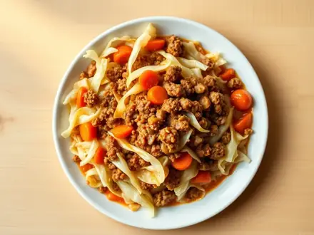
Капуста с фаршем на сковороде30 мин · 399 ккал · Б 21 г · Второе блюдо Кабачки с фаршем и помидорами на сковороде30 мин · 511 ккал · Б 26 г · Второе блюдо
Кабачки с фаршем и помидорами на сковороде30 мин · 511 ккал · Б 26 г · Второе блюдо Мясные гнёзда с грибами и сыром в духовке30 мин · 527 ккал · Б 32 г · Второе блюдо
Мясные гнёзда с грибами и сыром в духовке30 мин · 527 ккал · Б 32 г · Второе блюдо Кима - фарш с зелёным горошком по-индийски30 мин · 459 ккал · Б 25 г · Второе блюдо
Кима - фарш с зелёным горошком по-индийски30 мин · 459 ккал · Б 25 г · Второе блюдо Пицца из фарша без теста в духовке30 мин · 507 ккал · Б 34 г · Второе блюдо
Пицца из фарша без теста в духовке30 мин · 507 ккал · Б 34 г · Второе блюдо- Квашеная капуста с сосисками по-немецки30 мин · 404 ккал · Б 14 г · Второе блюдо
 Сосиски в слоёном тесте в духовке30 мин · 652 ккал · Б 19 г · Второе блюдо
Сосиски в слоёном тесте в духовке30 мин · 652 ккал · Б 19 г · Второе блюдо Кабачки, запечённые с ветчиной и сыром30 мин · 403 ккал · Б 19 г · Второе блюдо
Кабачки, запечённые с ветчиной и сыром30 мин · 403 ккал · Б 19 г · Второе блюдо Рыба по-французски из минтая в духовке30 мин · 469 ккал · Б 44 г · Второе блюдо
Рыба по-французски из минтая в духовке30 мин · 469 ккал · Б 44 г · Второе блюдо Скумбрия, тушённая в томате с луком и морковью30 мин · 365 ккал · Б 25 г · Второе блюдо
Скумбрия, тушённая в томате с луком и морковью30 мин · 365 ккал · Б 25 г · Второе блюдо Жюльен с креветками и грибами30 мин · 395 ккал · Б 31 г · Второе блюдо
Жюльен с креветками и грибами30 мин · 395 ккал · Б 31 г · Второе блюдо Минтай, запечённый с грибами в сметане30 мин · 413 ккал · Б 42 г · Второе блюдо
Минтай, запечённый с грибами в сметане30 мин · 413 ккал · Б 42 г · Второе блюдо Кальмары, фаршированные яйцом и сыром, в духовке30 мин · 681 ккал · Б 60 г · Второе блюдо
Кальмары, фаршированные яйцом и сыром, в духовке30 мин · 681 ккал · Б 60 г · Второе блюдо Хек, запечённый с овощами в духовке30 мин · 335 ккал · Б 36 г · Второе блюдо
Хек, запечённый с овощами в духовке30 мин · 335 ккал · Б 36 г · Второе блюдо Рыбное суфле из минтая на пару30 мин · 279 ккал · Б 33 г · Второе блюдо
Рыбное суфле из минтая на пару30 мин · 279 ккал · Б 33 г · Второе блюдо Карп жареный на сковороде кусочками30 мин · 396 ккал · Б 30 г · Второе блюдо
Карп жареный на сковороде кусочками30 мин · 396 ккал · Б 30 г · Второе блюдо Шашлычки из сёмги с овощами в духовке30 мин · 442 ккал · Б 35 г · Второе блюдо
Шашлычки из сёмги с овощами в духовке30 мин · 442 ккал · Б 35 г · Второе блюдо Перцы, фаршированные тунцом и сыром30 мин · 282 ккал · Б 28 г · Второе блюдо
Перцы, фаршированные тунцом и сыром30 мин · 282 ккал · Б 28 г · Второе блюдо Драчена - русский омлет со сметаной в духовке30 мин · 299 ккал · Б 15 г · Второе блюдо
Драчена - русский омлет со сметаной в духовке30 мин · 299 ккал · Б 15 г · Второе блюдо Яйца, запечённые в помидорах с сыром30 мин · 351 ккал · Б 23 г · Второе блюдо
Яйца, запечённые в помидорах с сыром30 мин · 351 ккал · Б 23 г · Второе блюдо Яйца Морне под сырным соусом30 мин · 492 ккал · Б 27 г · Второе блюдо
Яйца Морне под сырным соусом30 мин · 492 ккал · Б 27 г · Второе блюдо Котлеты из варёных яиц с сыром30 мин · 466 ккал · Б 26 г · Второе блюдо
Котлеты из варёных яиц с сыром30 мин · 466 ккал · Б 26 г · Второе блюдо Омлет как в детском саду в духовке30 мин · 337 ккал · Б 21 г · Второе блюдо
Омлет как в детском саду в духовке30 мин · 337 ккал · Б 21 г · Второе блюдо Паста с запечённой фетой и помидорами черри30 мин · 606 ккал · Б 22 г · Второе блюдо
Паста с запечённой фетой и помидорами черри30 мин · 606 ккал · Б 22 г · Второе блюдо Гречка по-купечески со свининой на сковороде30 мин · 547 ккал · Б 25 г · Второе блюдо
Гречка по-купечески со свининой на сковороде30 мин · 547 ккал · Б 25 г · Второе блюдо Джамбалая с курицей и колбасками30 мин · 598 ккал · Б 25 г · Второе блюдо
Джамбалая с курицей и колбасками30 мин · 598 ккал · Б 25 г · Второе блюдо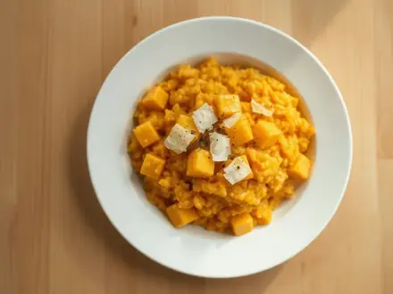
Ризотто с тыквой и пармезаном30 мин · 521 ккал · Б 14 г · Второе блюдо Пибимпап - рис с говядиной, овощами и яйцом по-корейски30 мин · 714 ккал · Б 34 г · Второе блюдо
Пибимпап - рис с говядиной, овощами и яйцом по-корейски30 мин · 714 ккал · Б 34 г · Второе блюдо Пшённая каша с грибами и луком30 мин · 382 ккал · Б 13 г · Второе блюдо
Пшённая каша с грибами и луком30 мин · 382 ккал · Б 13 г · Второе блюдо- Банош с брынзой и шкварками30 мин · 645 ккал · Б 22 г · Второе блюдо
 Гюдон - рис с говядиной и луком по-японски30 мин · 570 ккал · Б 31 г · Второе блюдо
Гюдон - рис с говядиной и луком по-японски30 мин · 570 ккал · Б 31 г · Второе блюдо Тушёная картошка с курицей30 мин · 471 ккал · Б 27 г · Второе блюдо
Тушёная картошка с курицей30 мин · 471 ккал · Б 27 г · Второе блюдо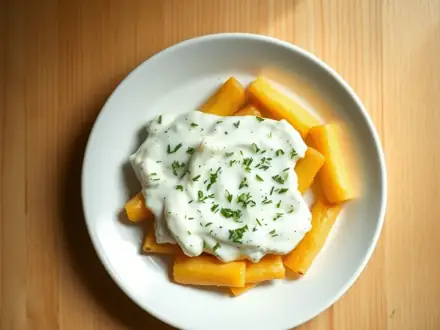
Картошка, тушённая в сметане с чесноком30 мин · 387 ккал · Б 7 г · Второе блюдо Тартифлет - картошка с беконом и сыром под сливками30 мин · 776 ккал · Б 31 г · Второе блюдо
Тартифлет - картошка с беконом и сыром под сливками30 мин · 776 ккал · Б 31 г · Второе блюдо Алу гоби - картошка с цветной капустой по-индийски30 мин · 305 ккал · Б 8 г · Второе блюдо
Алу гоби - картошка с цветной капустой по-индийски30 мин · 305 ккал · Б 8 г · Второе блюдо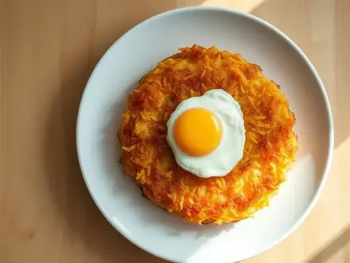
Рёшти - швейцарская картофельная лепёшка30 мин · 412 ккал · Б 6 г · Второе блюдо Ньокки из вчерашнего картофельного пюре30 мин · 650 ккал · Б 20 г · Второе блюдо
Ньокки из вчерашнего картофельного пюре30 мин · 650 ккал · Б 20 г · Второе блюдо Картошка, тушённая с капустой30 мин · 284 ккал · Б 7 г · Второе блюдо
Картошка, тушённая с капустой30 мин · 284 ккал · Б 7 г · Второе блюдо Жареная картошка с куриной печенью и луком30 мин · 580 ккал · Б 31 г · Второе блюдо
Жареная картошка с куриной печенью и луком30 мин · 580 ккал · Б 31 г · Второе блюдо Чечевица с морковью и луком30 мин · 415 ккал · Б 21 г · Второе блюдо
Чечевица с морковью и луком30 мин · 415 ккал · Б 21 г · Второе блюдо Стручковая фасоль в томатном соусе по-гречески30 мин · 313 ккал · Б 8 г · Второе блюдо
Стручковая фасоль в томатном соусе по-гречески30 мин · 313 ккал · Б 8 г · Второе блюдо Капустная солянка с грибами на сковороде30 мин · 263 ккал · Б 9 г · Второе блюдо
Капустная солянка с грибами на сковороде30 мин · 263 ккал · Б 9 г · Второе блюдо Цветная капуста под сырным соусом в духовке30 мин · 390 ккал · Б 21 г · Второе блюдо
Цветная капуста под сырным соусом в духовке30 мин · 390 ккал · Б 21 г · Второе блюдо Грибные котлеты с овсяными хлопьями постные30 мин · 408 ккал · Б 14 г · Второе блюдо
Грибные котлеты с овсяными хлопьями постные30 мин · 408 ккал · Б 14 г · Второе блюдо Кабачковые лодочки с грибами и сыром в духовке30 мин · 435 ккал · Б 22 г · Второе блюдо
Кабачковые лодочки с грибами и сыром в духовке30 мин · 435 ккал · Б 22 г · Второе блюдо- Сливочный суп с сёмгой (лохикейтто)30 мин · 459 ккал · Б 24 г · Суп
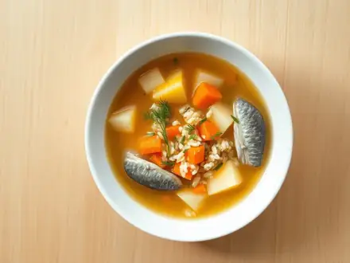
Рыбный суп из консервов с рисом30 мин · 263 ккал · Б 18 г · Суп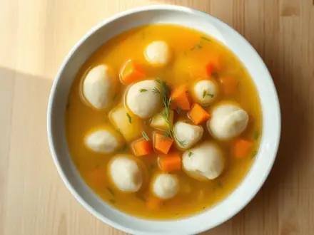
Суп с клёцками на курином бульоне30 мин · 208 ккал · Б 8 г · Суп Фо га - вьетнамский суп с курицей и рисовой лапшой30 мин · 330 ккал · Б 28 г · Суп
Фо га - вьетнамский суп с курицей и рисовой лапшой30 мин · 330 ккал · Б 28 г · Суп- Кукурузный суп-чаудер с беконом и картошкой30 мин · 386 ккал · Б 14 г · Суп
 Тёплый салат с запечённой тыквой, шпинатом и фетой30 мин · 499 ккал · Б 21 г · Салат
Тёплый салат с запечённой тыквой, шпинатом и фетой30 мин · 499 ккал · Б 21 г · Салат Запеканка из чёрствого хлеба с ветчиной и сыром30 мин · 588 ккал · Б 30 г · Второе блюдо
Запеканка из чёрствого хлеба с ветчиной и сыром30 мин · 588 ккал · Б 30 г · Второе блюдо Аранчини из вчерашнего риса с моцареллой30 мин · 658 ккал · Б 22 г · Второе блюдо
Аранчини из вчерашнего риса с моцареллой30 мин · 658 ккал · Б 22 г · Второе блюдо Курица тандури на сковороде30 мин · 488 ккал · Б 39 г · Второе блюдо
Курица тандури на сковороде30 мин · 488 ккал · Б 39 г · Второе блюдо Ленивые пельмени на сковороде30 мин · 635 ккал · Б 27 г · Второе блюдо
Ленивые пельмени на сковороде30 мин · 635 ккал · Б 27 г · Второе блюдо Капоната - сицилийское рагу из баклажанов30 мин · 325 ккал · Б 5 г · Второе блюдо
Капоната - сицилийское рагу из баклажанов30 мин · 325 ккал · Б 5 г · Второе блюдо Плов с курицей на сковороде30 мин · 627 ккал · Б 27 г · Второе блюдо
Плов с курицей на сковороде30 мин · 627 ккал · Б 27 г · Второе блюдо Том ям с креветками30 мин · 280 ккал · Б 25 г · Суп
Том ям с креветками30 мин · 280 ккал · Б 25 г · Суп Фунчоза с овощами по-корейски30 мин · 284 ккал · Б 5 г · Салат
Фунчоза с овощами по-корейски30 мин · 284 ккал · Б 5 г · Салат Салат с киноа, авокадо и овощами30 мин · 329 ккал · Б 8 г · Салат
Салат с киноа, авокадо и овощами30 мин · 329 ккал · Б 8 г · Салат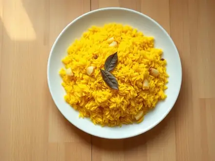
Рис с куркумой и чесноком30 мин · 310 ккал · Б 6 г · Гарнир Киноа с овощами на сковороде30 мин · 284 ккал · Б 9 г · Гарнир
Киноа с овощами на сковороде30 мин · 284 ккал · Б 9 г · Гарнир Гречка с жареным луком и морковью30 мин · 348 ккал · Б 11 г · Гарнир
Гречка с жареным луком и морковью30 мин · 348 ккал · Б 11 г · Гарнир- Кальмары тушёные в сметане25 мин · 355 ккал · Б 38 г · Второе блюдо
- Котлеты из гречневой каши30 мин · 388 ккал · Б 11 г · Второе блюдо
Другие подборки
- Что приготовить из курицы
- Что приготовить из фарша
- Что приготовить из мяса
- Что приготовить из рыбы
- Что приготовить из картошки
- Что приготовить из яиц
- Что приготовить из творога
- Что приготовить из кабачков
- Что приготовить из капусты
- Что приготовить из грибов
- Что приготовить из риса
- Что приготовить из макарон
- Что приготовить из гречки
- Быстрый завтрак за 20 минут
- Что приготовить на скорую руку
- ПП-рецепты: лёгкие блюда до 400 ккал
- Белковые блюда: от 25 г белка на порцию
- Дешёвые рецепты из простых продуктов
- Что приготовить ребёнку
- Постные блюда
- Блюда на пару
- Что приготовить в духовке
- Простые супы
- Простые салаты
- Выпечка и десерты
- Блюда на праздничный стол
- Что приготовить из остатков